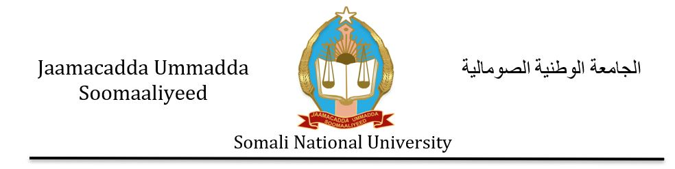
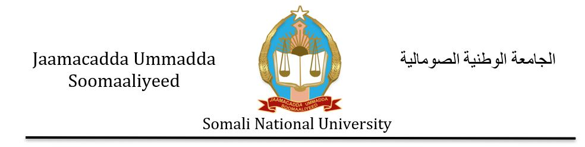

Jaamacadda Ummadda Soomaaliyeed
Hoyga aqoonta & horumarka dalka

Hoyga aqoonta & horumarka dalka

Jaamacadda Ummadda Soomaaliyeed waa jaamacad qaran ah oo xarunteedu tahay magaalada Muqdisho. Waxay siisaa ardayda Soomaaliyeed fursado waxbarasho oo tayo sare leh.
Waxaa la aasaasay sanadkii 1954, waana jaamacaddii ugu horreysay ee laga hirgeliyo gudaha Soomaaliya. Waxay ahayd bartilmaameed muhiim ah xilligii dowladdii dhexe.
Jaamacaddu waxay hoy u tahay kumannaan arday ah oo ka kala yimaada gobollada dalka. Waxaa sidoo kale jira barnaamijyo waxbarasho oo heerar kala duwan leh sida:
Waxaad wax badan ka ogaan kartaa jaamacadda adigoo booqanaya boggeeda rasmiga ah ama la xiriiraya xafiisyada maamulka.